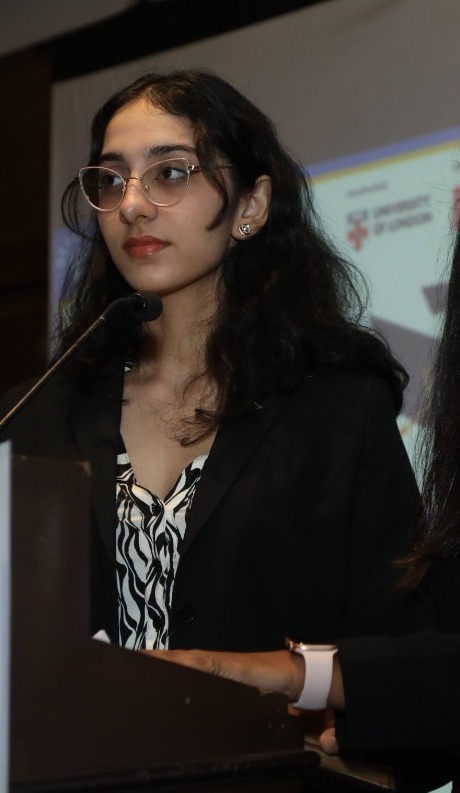

I'm an economist who tests that question with data, on trade policy, emerging markets, and firm behaviour. My favourite module at LSE was Economics of Industry, and it shaped my dissertation: I found that an additional tariff on imports didn't raise Indian steel firms' productivity, the mirror image of Topalova and Khandelwal's (2011) finding that liberalisation raises it. Protection, it turns out, doesn't work the same way in reverse.
Six internships and a lot of early mornings got me to LSE. I'm looking for roles in strategy, economic and market research, and consulting, wherever rigorous analysis meets real decisions.
Twelve index cards. Click one to flip it.
Not a skills list, the real questions I've spent time on.
I'll show you a real-style difference-in-differences result. You decide if it's statistically significant at the 5% level before I confirm.

I was Head of Dramatics at school, and I've loved being on a stage ever since, the microphone, the nerves right before, all of it.
I play badminton whenever I can rope someone into a game, and I've played piano for years. Music is the one place I go where I'm not trying to figure anything out.